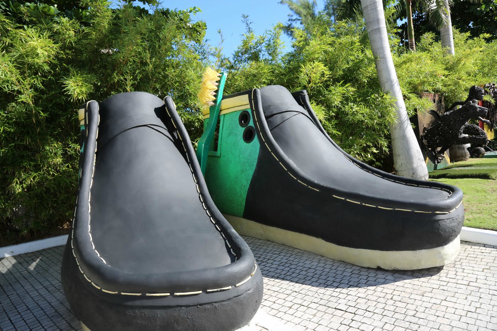
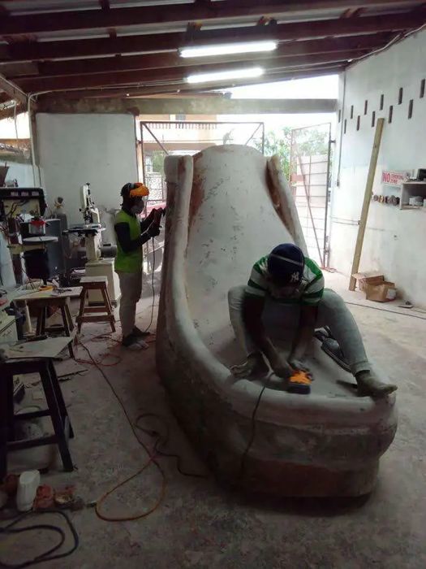
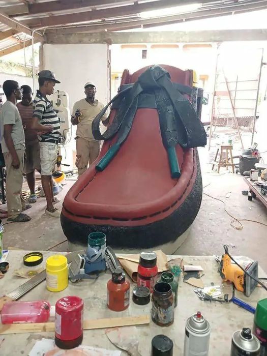
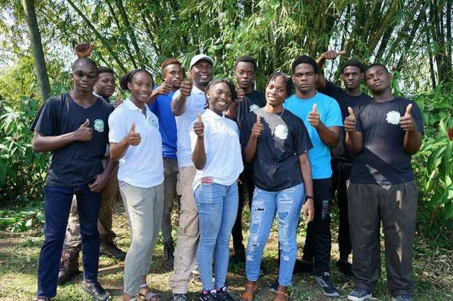
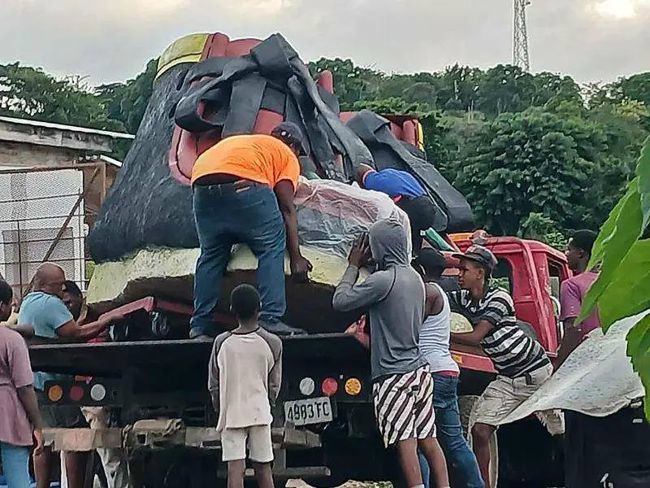
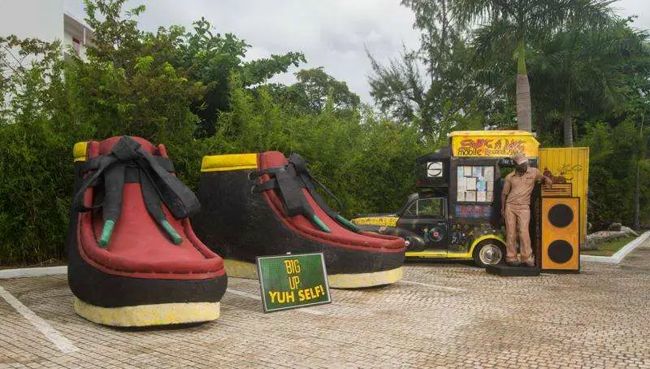

S Hotel · Montego Bay · 2024
Clarks / Wallabee Installation
A 12-foot interpretation of the Wallabee, created by Scheed Cole and his team for S Hotel Montego Bay.


The project
A familiar icon.
A monumental scale.
Commissioned by hotelier Christopher Issa, the installation transforms the Wallabee into a pair of 12-foot sculptures. Black, green and yellow surfaces, oversized stitching and textured sides translate the familiar footwear into an artwork visitors can encounter at architectural scale.
Cole bought a pair of Wallabees to study the design. The result preserves recognisable details while turning an everyday object associated with Jamaican style into a landmark at S Hotel.
Culture
Why Clarks
in Jamaica?
Clarks footwear has a long relationship with Jamaica’s reggae and dancehall scenes. Musicians and the communities around them helped turn the shoes into a marker of style and belonging. The Wallabee’s moccasin form and distinctive sole make it an immediately recognisable part of that story.
The installation celebrates that cultural connection through scale, colour and craft.
Making the work
Built together.
Skills in practice.
Jamaica Observer reported that ten young people worked on the installation over three months, with completion timed for New Year’s Day 2024. The project formed part of Cole’s wider approach to training young creatives through practical work.
A February 2024 Gleaner report describes the sculptures as 12 feet high and explains that the design developed to allow people inside. That decision extended the work from something to look at into an immersive installation.
Behind the scenes · Work in progress
Making
Clarks.
A glimpse into the making of the Clarks installation — a selection of moments from the workshop, finishing and delivery, offering a small window into the work behind the sculptures.





Archive photographs published in Jamaica Observer · 14 January 2024. Installation photograph: Alan Smith Photography.
Behind the work